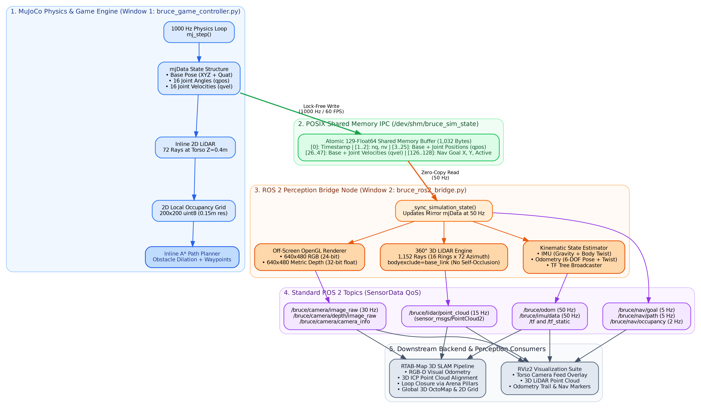
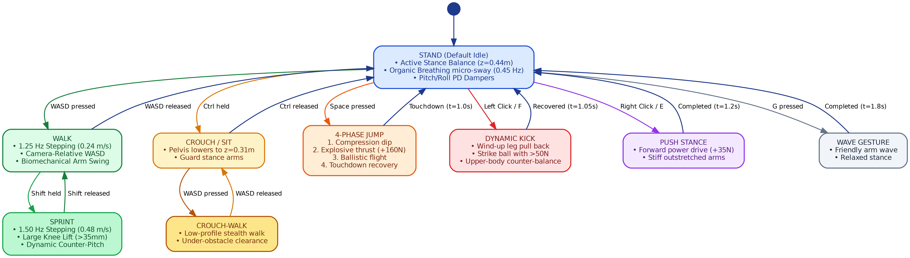
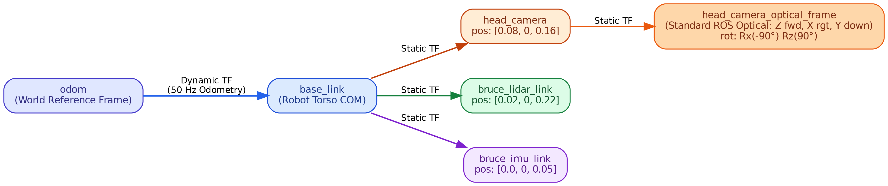

BRUCE is an agile bipedal humanoid robot standing 0.45m at nominal pelvis height with a total mass of 4.2 kg. The simulation environment accurately models the physical robot's mechanical structure, actuator dynamics, and environmental contact mechanics:
dt=0.001s) using projected Gauss-Seidel optimization with elliptic friction cones and soft-contact parameters (solref=0.004, solimp=0.9). This eliminates foot contact chattering and penetration spikes during single-stance and double-stance transitions.
Every major design choice was made to resolve specific physical, mathematical, or performance trade-offs:
MjvScene, MjrContext, and mjr_overlay was built for responsive game controls and live HUD displays.WASD vectors against camera azimuth angle θ ensures that pressing W always moves forward in the direction the camera is looking, matching modern third-person action games.mujoco.mj_ray() with bodyexclude=self.base_body_id ensures rays pass through BRUCE's own chest and head meshes, preventing false self-occlusion.M toggles between Game Mode (cursor locked to camera orbit) and Manipulation Mode (cursor unlocked). In Manipulation Mode, raycasting calculates world floor points and applies spring-damper forces (F = 80Δp - 12v) to drag arena objects live.GTK_PATH) in all bash launchers prevents Qt5 in RViz2 from loading mismatched glibc 2.31 libraries from Snap, guaranteeing 100% reliable startup on Ubuntu 24.04.BRUCE features a hierarchical state machine handling dynamic locomotion, physical interaction, and autonomous tasks:

M key), clicking and dragging dynamic objects moves them across the floor in real time to create custom obstacles.N activates autonomous A* path planning using inline LiDAR obstacle avoidance.The table below details all perception sensors, coordinate transforms, and backend tools in the platform:
| Tool / Sensor | Physical Spec | Update Rate | ROS 2 Topic / Interface | Operational Role |
|---|---|---|---|---|
| RGB-D Head Camera | 640×480, FOV 65° | 30 Hz | /bruce/camera/image_raw/bruce/camera/depth/image_raw |
First-person vision in RViz2; ORB feature tracking for Visual Odometry in RTAB-Map |
| Camera Intrinsics | Pinhole fx=fy=476.7 | 30 Hz | /bruce/camera/camera_info |
Calibrated projection matrix for depth unprojection into 3D metric space |
| 360° 3D LiDAR | 16 rings × 72 azimuths (1,152 rays) | 15 Hz | /bruce/lidar/point_cloud |
High-density 3D obstacle mapping, stair detection, and ICP point cloud alignment in SLAM |
| Torso IMU (6-DOF) | Base link dynamics | 50 Hz | /bruce/imu/data |
Angular body rates and gravity-compensated linear accelerations for attitude estimation |
| Ground-Truth Odom | Floating base EKF | 50 Hz | /bruce/odom |
Tracks robot trajectory and velocity twist in odom reference frame |
| TF Transform Tree | Dynamic & Static | 50 Hz | /tf, /tf_static |
Spatial frame tree: odom → base_link → head_camera → optical / lidar / imu |
| Local 2D Nav Grid | 200×200 uint8 (0.15m res) | 2 Hz | /bruce/nav/occupancy |
Live costmap mirroring inline LiDAR obstacle hits for local path visualization |
| Navigation Target | Interactive picker | 5 Hz | /bruce/nav/goal/bruce/nav/path |
Streams active navigation goal arrow and straight-line path trail to RViz2 |
| ROS 2 Bridge Node | POSIX SHM Consumer | 50 Hz | bruce_ros2_bridge.py |
Decoupled node reading shared memory, running off-screen rendering and topic publishing |
| RViz2 Visualization | Robotics GUI | 60 FPS | bruce_slam.rviz |
Real-time 3D dashboard displaying camera overlays, point clouds, trajectory paths, and TF frames |
| RTAB-Map 3D SLAM | Multi-session SLAM | 15 Hz | run_ros2_perception.sh --slam |
Fuses RGB-D and 3D LiDAR with landmark pillar loop closure to build global 3D OctoMaps |

| Key / Input | Mode | Action | Functional Behavior |
|---|---|---|---|
W / S | Game | Walk Forward / Backward | Camera-relative locomotion in active look direction |
A / D | Game | Strafe Left / Right | Camera-relative lateral sidestepping |
Shift + WASD | Game | Sprint | Accelerates gait to 1.50 Hz (0.48 m/s) with forward lean and wide strides |
Ctrl (Hold) | Game | Crouch | Lowers pelvis to z=0.31m into defensive guard; WASD enables crouch-walking |
Space | Game | Jump | 4-phase dynamic vertical jump with explosive +160N thrust and compliant landing |
Left Click / F | Game | Kick | Dynamic leg strike launching the soccer ball with >50N force |
Right Click / E | Game | Push | Forward power stance with rigid arms pushing crates and barrels |
G | Game | Wave | Friendly greeting wave gesture with right arm |
R | Any | Reset | Instantly teleports robot, ball, and arena objects back to initial poses |
M | Any | Toggle Mode | Switches between Game Mode (cursor locked) and Manipulation Mode (cursor free) |
Left Drag | Manipulation | Move Object | Applies spring-damper force to drag dynamic objects across the arena floor |
Double Click | Manipulation | Plant Goal | Plants glowing green Goal Marker on floor for autonomous navigation |
Right Click | Manipulation | Clear Goal | Clears active navigation goal marker |
N | Any | Auto-Nav | Toggles autonomous navigation; robot dodges obstacles via inline LiDAR A* |
Mouse Move | Game | Orbit Camera | 360° horizontal yaw azimuth and -75° to +20° vertical pitch elevation |
Mouse Wheel | Any | Zoom Camera | Smoothly adjusts camera follow distance from 0.8m to 5.0m |
Tab / Esc | Game | Free Cursor | Releases hardware cursor lock to click outside window |